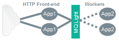

Sample MQ Light Bluemix Application:- Worker Offload Pattern
This sample demonstrates a simple worker-offload pattern using the Message Hub service MQ Light API support.
The worker-offload pattern improves responsiveness by allowing a front-end user interface delegate work to one or more back-end worker instances.
Type a sentence in the box and press submit. The sample will:
- Send the sentence from the browser to the front-end app using a HTTP POST
- Send each word in the sentence from the front-end app to the workers using MQ Light
- Invoke a worker for each word, which converts the word to upper-case
- Send a notification containing the upper-case word from the worker to the front-end using MQ Light
- Send each notification from the front-end app to the browser using a polling HTTP GET
- Display the upper-case words in this page as they arrive
- Messages might not arrive in the order in which they are sent.
This is because each worker can take a variable amount of time to process a message. - If you open this page in multiple browsers, then each will receive all words.
This is because in this sample each instance subscribes to notifications from all backend workers. - HTTP GET polling of notification messages is uncommon in real apps.
Apps normally process notifications as they arrive in the front-end, and update state in a database or other state store.
Notifications from the Node.js sample back-end look like this
Notifications from the Ruby sample back-end look like this
Notifications from the Python sample back-end look like this
Notifications from the Java sample back-end look like this